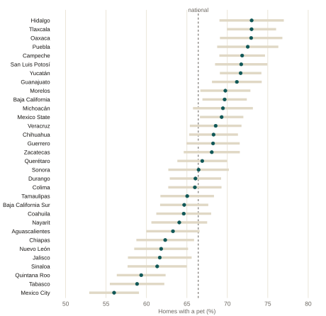
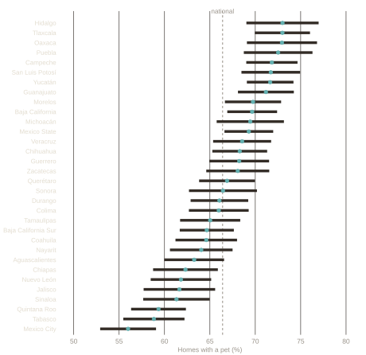
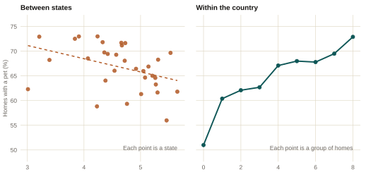
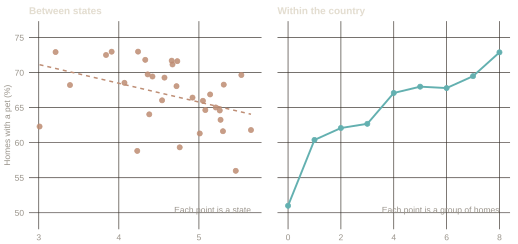

Pets, wellbeing, and the ecological fallacy
Curiosity · ENBIARE 2025
A relationship measured between groups can reverse for the individuals inside them. That mistake has a name, the ecological fallacy, and INEGI’s new pet data is an unusually clean example of it.
Curiosity · INEGI, ENBIARE 2025 · Public microdata
Statistics has an old mistake with a name. It shows up when a relationship is measured between groups and then read as if it also held for the individuals inside those groups. The two are different quantities. They can differ by a lot, and they can point in opposite directions.
The example that named the mistake is from 1950. Looking at the 1930 US census, the sociologist W. S. Robinson found that states with more foreign-born residents had less illiteracy, a correlation of −0.53 across states. Among individuals the relationship ran the other way: a foreign-born person was more likely to be illiterate, a correlation of +0.12. Both numbers are right. They answer different questions, and only the second one is about people. Robinson called the first an ecological correlation, and treating it as if it were the second became known as the ecological fallacy.
The trap is easy to describe and hard to see in the wild, because aggregated data never announces that it is aggregated. Mexico now has an unusually clean example, and it is about pets.
What INEGI published
In July 2026 INEGI released the microdata of its 2025 wellbeing survey. For the first time it counts pets: 66.4% of homes have at least one, and the survey expands to 41.2 million dogs and 19.2 million cats. The headline travelled, and so did a ranking of states.
Where the pets are
Pets are not spread evenly. Hidalgo, Tlaxcala, Oaxaca and Puebla sit near 73% of homes. Mexico City closes the list at 56%.
The state ranking is mostly sampling noise
Each state is estimated from about a thousand homes. The median standard error is 1.7 points, so a 95% confidence interval runs 3.3 points either side of the estimate and is 6.6 points wide. The distance between Tlaxcala and Puebla is 0.47 of a point. It fits fourteen times inside that interval.


Share of homes with at least one pet, by state, with 95% confidence intervals from the survey design. The dashed line is the national estimate, 66.4%.
Most of the intervals overlap. Ordering 32 states from first to last reads sampling noise as a result. What does survive is the contrast between the extremes: Mexico City is genuinely below the rest of the country.
The same relationship at two levels of aggregation
The survey asks about eight household assets in the same section as the pets: refrigerator, washing machine, car, flat screen, computer, game console, internet, and a paid streaming service. Counting them gives a rough index of material standard of living, from 0 to 8. Crossing that index with pet ownership gives two answers, depending on what counts as an observation.


Left: the 32 states, average assets against the share of homes with a pet. The correlation is −0.39. Right: homes grouped by how many of the eight assets they own. Both panels share the vertical axis.
Between states the relationship is negative. Within the country it is positive and close to monotone, rising 21.9 points from homes with no assets to homes with all eight. Both panels describe the same 32,908 homes.
That is Robinson’s reversal, with pets in place of literacy. The left panel is a fact about states and it is correctly measured. It is simply not a fact about households, and nothing in it warns that the household version runs the other way.
What produces the reversal
Composition. The states with the most pets are the most rural, and rural pulls in both directions at once: lower assets and more dogs. In localities under 10,000 inhabitants, 71.4% of homes have a pet, against 64.0% elsewhere, and there are 1.28 dogs per home against 0.95.
Once state fixed effects, locality size and household size are held constant, each additional asset is associated with a 2.8 point higher probability of having a pet (standard error 0.19) and 2.7 points for a dog (0.20). For cats the coefficient is 0.17 points (0.17), which is indistinguishable from zero. These are conditional correlations from a cross-section, not effects.
Where else this shows up
The same trap is available wherever data arrive already grouped. A comparison of countries read as a statement about people. A state map of poverty next to a state map of anything else. Any regression whose unit is a region when the claim is about individuals. The question that catches it is short: what is one row of this table? If the answer is a state and the claim is about households, the two do not have to agree.
Robinson, W. S. (1950). Ecological Correlations and the Behavior of Individuals. American Sociological Review 15(3), 351–357.
How this is built
Source: INEGI, Encuesta Nacional de Bienestar Autorreportado 2025, open microdata, housing table. Pets are questions P1.8.1.1 through P1.8.3.2, six items inside the housing section. The survey covers 32,908 homes and expands to 38.9 million, with estimates representative nationally, by state, and by locality size.
All estimates use the survey’s declared design (primary sampling units, strata and expansion factors) through R’s survey package, the same standard the Labor Market MX pages apply to the ENOE. The national figures reproduce INEGI’s own release exactly. The script that downloads the microdata, computes every number on this page and draws both figures is scripts/08-curiosities-pets.R in this site’s public repository.
The survey records whether the home has a dog, a cat, or another pet, and how many of each. It does not record what the other pet is, nor spending, veterinary care, sterilisation, or breed, and it does not go below the state and locality-size level.